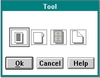

Value set control window styles are set when a value set window is created.
VS_BITMAP
VS_BORDER
Note: The VS_ITEMBORDER style is useful for items that are hard to see, such as faint colors or patterns. The following picture provides an example of a value set with item borders.
There is no visible difference between a value set ordered left-to-right and a value set ordered right-to-left. Therefore, if your application uses multiple value sets, the ordering of the items should be consistent in each value set to avoid confusing the user.
Note: The VS_RIGHTTOLEFT style is used on creation of the control. Changing this style after creation causes unexpected results.